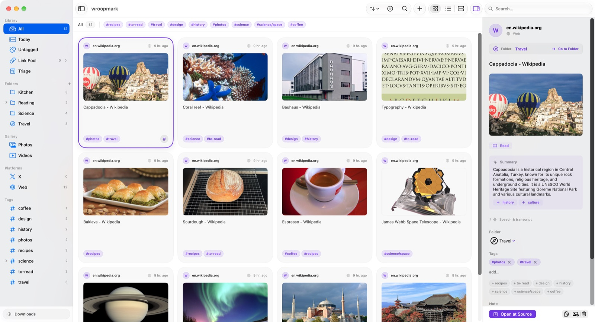
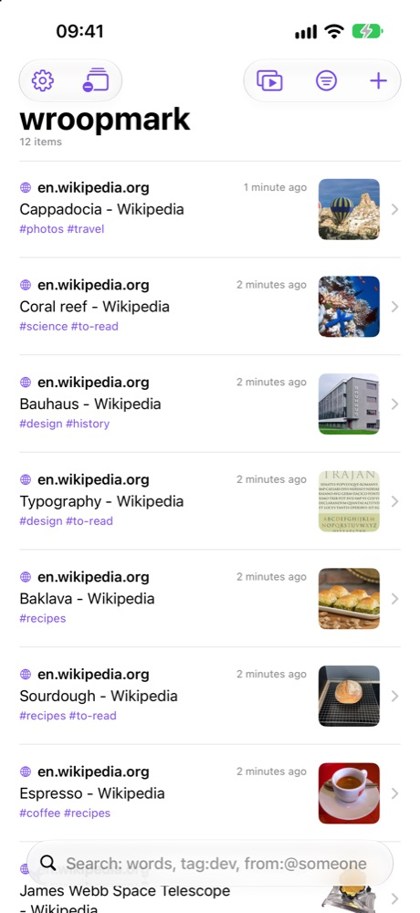
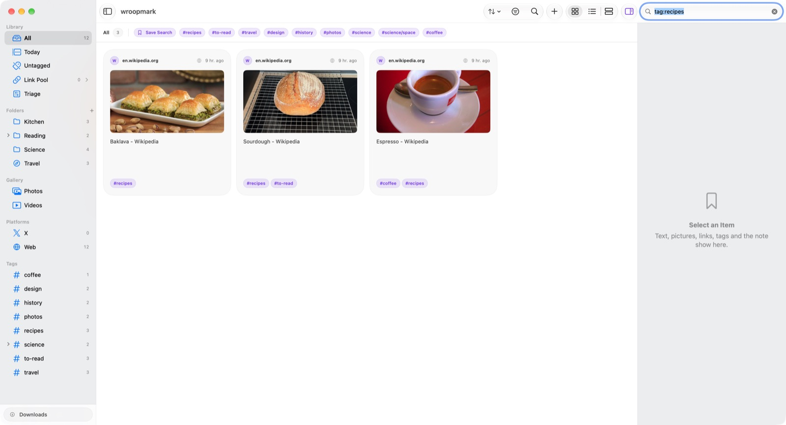
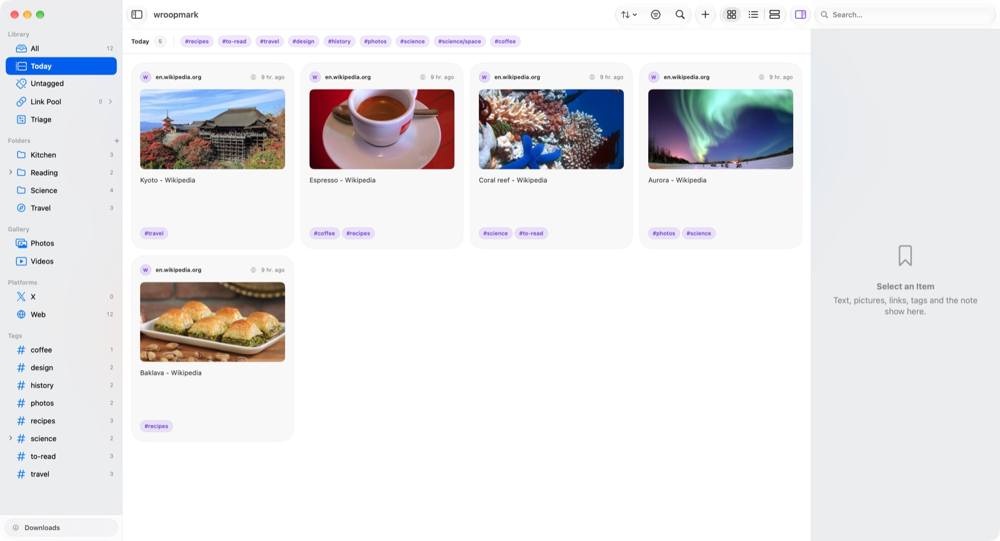
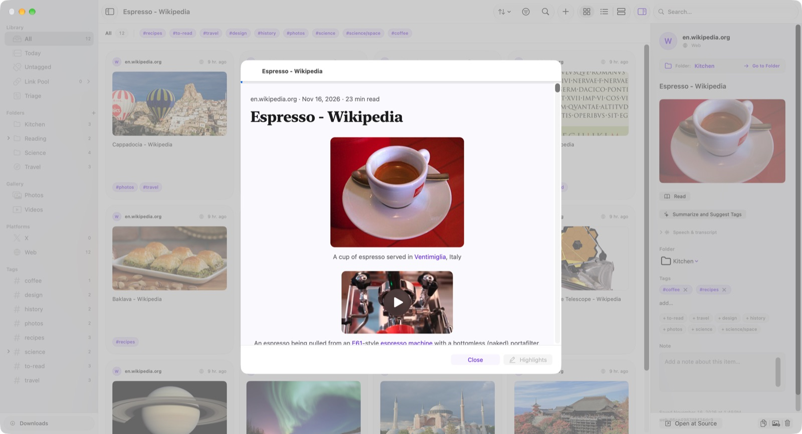
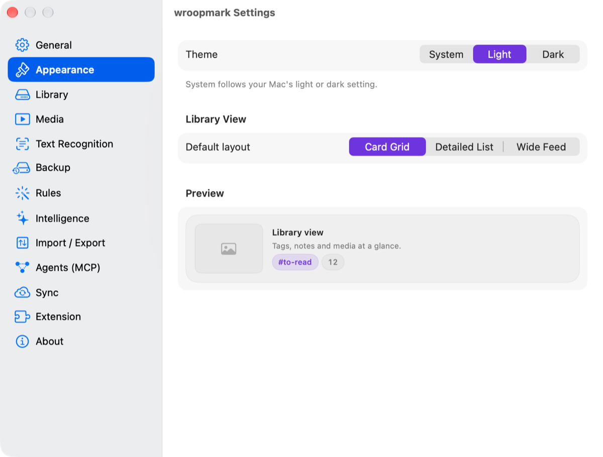
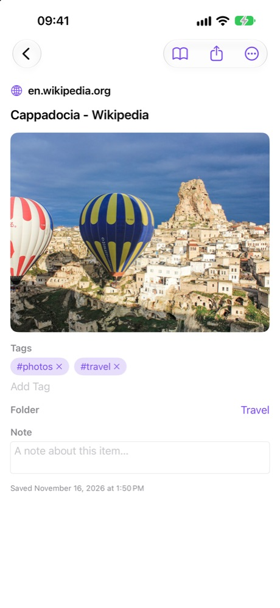
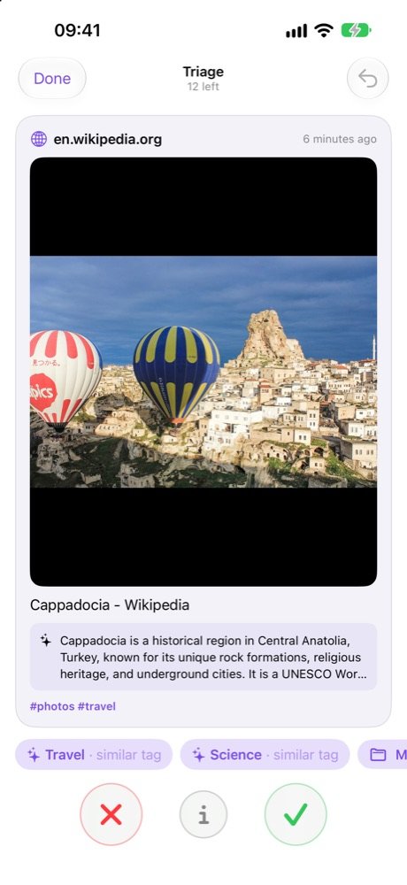
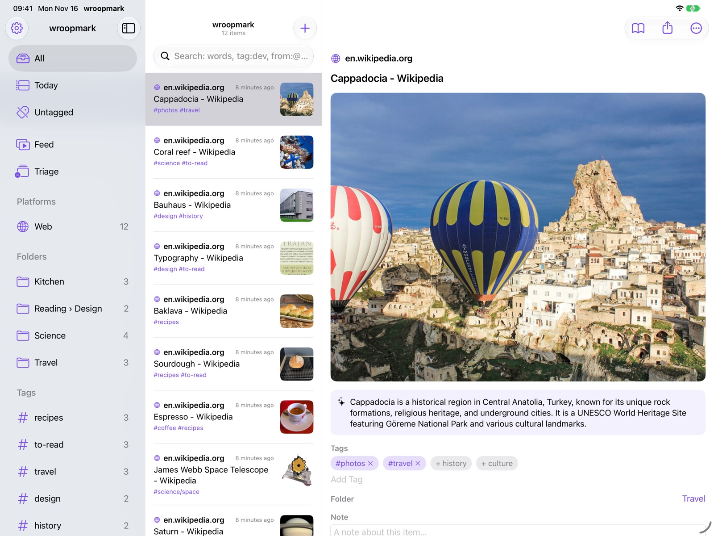

Everything in one grid
Posts, pages and pictures from every app, picture first, newest on top. Folders, nested tags and platforms in the sidebar.
Posts, videos, articles and pictures from X, TikTok, Instagram, Reddit, YouTube and the web, kept on your Mac, iPhone and iPad. Offline, searchable, and on nobody's server, because there isn't one.
Free and open source · macOS 26 or later · 15 MB, signed and notarized by Apple · v1.7.1


Saves from
You save things everywhere, and they scatter: five apps, half of them unsearchable, and the post you wanted is gone the day its author deletes it. wroopmark keeps the text, the pictures and the videos on your own devices, so they stay readable offline and outlive the original.
Tour · Mac
Scroll, and the window below does what the app does.






Posts, pages and pictures from every app, picture first, newest on top. Folders, nested tags and platforms in the sidebar.
Select anything: an on-device summary, suggested tags and its folder appear beside it. Apple's models, on your Mac; nothing is sent anywhere.
Type tag:recipes, from:@someone, has:video or plain words. Text inside pictures and speech in videos count too.
What you saved on this day in past years, and five picks from the archive, so old saves come back to you.
Saves come one at a time: delete, keep, or drop into a suggested folder. Keys ← → 1–2, and undo.
A gallery of every image you ever saved. Similar-picture search finds the rest of a series.
A clean reader built from the page's own copy: themes, text size, read aloud, highlights and notes. It works after the site is gone.
Follow your Mac, or pick one. ⌘N to add, Space to preview, ⌃⌥⌘S to save from any app.
Tour · iPhone
It works on its own; the Mac only makes it faster.



In X, Safari, Instagram or any app: Share → wroopmark. Add it to your favorites once and it's always one tap.
The link is saved at once. Title, text and pictures arrive by themselves, even if you were offline.
Every save keeps its pictures. Tag it, file it, write a note, or put your own video from Photos on the post.
The offline reader, with highlights that sync and read-aloud controls on the Lock Screen.
Triage on the phone: swipe left to delete, right to keep, tap a suggested folder.
Search
Any word from the title, the text, your notes and highlights, or the text inside pictures. Case and Turkish ı/i don't matter.
Only posts with a tag. Nested tags like reading/tech include their children.
Only posts by one person, on any platform.
has:image, has:video, has:highlight: only posts with pictures, videos or your highlights.
Dates as loose as you like: after:2024, before:2025-06.
Quotes for words in that order. Also site:github.com, platform:x, folder:Name, is:untagged.
Turn on meaning search and describe it instead: "coffee from Italy" finds the espresso page. On-device, in your language.
Sync
Pick a folder in your own iCloud Drive. That's the whole setup, and it's also your backup.
Your Mac only appends to its own file. Nothing is ever written by two devices at once, so nothing gets corrupted.
Your iPhone reads what the Mac wrote and the other way round. Edits merge field by field.
Media is stored once, by its fingerprint. The Mac brings videos to the phone through the same folder.
Choose the same folder on a new device and the whole archive comes back.
Privacy
No account. No server. No ads. No tracking. Your archive is a folder on your own disk, and it stays readable even if every site it came from goes away.
Read the privacy policy →Light & fast
No Electron, no background service, no browser engine kept warm. When the window is open and you aren't doing anything, wroopmark uses no CPU. Text recognition and on-device AI run in small helper processes only while they have work, and you can pause them in Settings.
| Measured on a Mac | Result |
|---|---|
| CPU, window open, idle (a 50,000-post library, and a real archive after a day of use) | 0.0% |
| Memory, 50,000 posts, window open | ~110 MB |
| Memory after a day of everyday use, a screen full of pictures | ~280 MB |
| Open the library | 5 ms |
| First page of the newest posts | 0.6 ms |
| Word or phrase search across 50,000 posts | 7–21 ms |
Filters (platform:x has:video tag:…, from:@…, folders) | 3–32 ms |
| Download / installed app | 15 MB / 29 MB |
Mac with M4 Pro, macOS 27.2, wroopmark 1.7. Memory is the system's “footprint” figure; CPU is from top over a minute. After a big import the library is indexed once in the background (text recognition, search by meaning), which uses CPU until it is done. Timings come from the repository's own test, WM_PERF_N=50000 cargo test --release --test perf -- --ignored, so you can run it yourself.
iPad
Scopes, the list and the post side by side, with the same reader, feed and Triage.

Everything else
Saved videos and posts full screen, one after another, with picture-in-picture, AirPlay and playback speed.
Data downloads from TikTok, Instagram, X, Threads and Reddit, browser bookmarks, Pocket and Raindrop CSV.
Chrome, Brave, Arc, Edge, Vivaldi and Safari: bookmarks and saved posts flow in as you browse.
Rules that file new saves, duplicates, a link pool with broken-link checks.
Markdown (Obsidian-ready, with pictures), CSV, JSON, or one HTML page you can send to anyone.
A local MCP server lets agents such as Claude search and read your archive, on your machine.
How it compares
| wroopmark | Read-later apps | Bookmark managers | Self-hosted archivers | |
|---|---|---|---|---|
| Keeps the post's pictures and videos | ✅ | — | — | some |
| Social saves (X, TikTok, Instagram, Reddit, Bluesky, Threads) | ✅ | — | links only | some |
| Offline, survives deletion | ✅ | articles | — | ✅ |
| Search inside pictures and video speech | ✅ | — | — | — |
| On-device AI | ✅ | cloud | cloud | external API |
| No account, no server | ✅ | — | — | needs a server |
| Native Mac, iPhone and iPad apps | ✅ | ✅ | ✅ | web |
Get it
macOS 26 or later. Signed and notarized by Apple; it keeps itself up to date and checks every update's signature first.
Download for MacComing to the App Store. The app walks you through the Share menu, the Safari extension and iCloud backup on first launch.